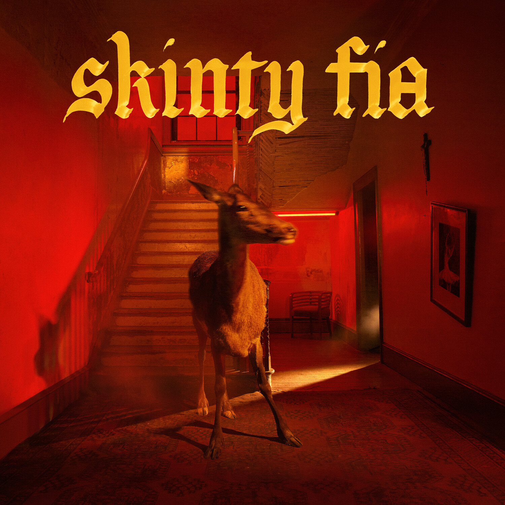

Fontaines D C- Skinty Fia



Género: Indie Rock
Sello: Partisan Records
Año: 2022-04-22
Total de pistas: 10
Información de Producción
| Campo | Información |
|---|---|
| Sello | Partisan Records |
| Año | 2022-04-22 |
| Género | Indie Rock |
| Total de pistas | 10 |
| Productores | Dan Carey |
| Ingeniería | Alexis Smith (5) |
| Masterización | Christian Wright |
| Créditos adicionales | Art Direction, Design: Aidan Cochrane • Bass: Conor Deegan • Drums, Percussion: Tom Coll • Engineer: Alexis Smith (5) • Guitar, Art Direction: Carlos O’Connell • Lettering: Ashley Willerton • Management: Trevor Dietz, Wildlife Entertainment • Mastered By: Christian Wright • Photography By: Filmawi • Producer, Mixed By: Dan Carey • Synth: Dan Carey • Words By: Carlos O’Connell • Words By, Lead Vocals, Tambourine, Accordion, 12-String Acoustic Guitar: Grian Chatten |
Tracklist
1. In ár gCroíthe go deo [5:59] | 📺 YouTube
2. Big Shot [4:13] | 📺 YouTube
3. How Cold Love Is [3:24] | 📺 YouTube
4. Jackie Down the Line [4:01] | 📺 YouTube
5. Bloomsday [4:30] | 📺 YouTube
6. Roman Holiday [4:28] | 📺 YouTube
7. The Couple Across the Way [3:56] | 📺 YouTube
8. Skinty Fia [3:55] | 📺 YouTube
9. I Love You [5:05] | 📺 YouTube
10. Nabokov [5:21] | 📺 YouTube
Instrumentos y Equipos
| Tipo | Marca | Modelo | Año | Precio | Puntuación | Enlaces |
|---|---|---|---|---|---|---|
| amplifier | Ampeg | V-4B | 2025 | - | - | 🎛️ Equipboard |
| unknown | Boss | BF-3 Flanger | 2025 | - | - | 🎛️ Equipboard |
| unknown | Boss | CE-2W Chorus Waza Craft | 2025 | - | - | 🎛️ Equipboard |
| bass_guitar | Boss | GEB-7 Bass Equalizer | 2025 | - | - | 🎛️ Equipboard |
| effect_pedal | Boss | RV-6 Reverb | 2025 | - | - | 🎛️ Equipboard |
| unknown | Boss | TR-2 Tremolo | 2025 | - | - | 🎛️ Equipboard |
| unknown | Boss | TU-3 Chromatic Tuner | 2025 | - | - | 🎛️ Equipboard |
| unknown | Danelectro | 59 DC | 2025 | - | - | 🎛️ Equipboard |
| amplifier | Darkglass | Electronics Alpha Omega Ultra preamplifier | 2025 | - | - | 🎛️ Equipboard |
| unknown | Death | By Audio Echo Dream 2 | 2025 | - | - | 🎛️ Equipboard |
| effect_pedal | Death | By Audio Reverberation Machine | 2025 | - | - | 🎛️ Equipboard |
| effect_pedal | DigiTech | HardWire RV-7 Stereo Reverb | 2025 | - | - | 🎛️ Equipboard |
| electric_guitar | Dunlop | Tortex Standard 0.60mm Guitar Picks | 2025 | $400+ | - | 🎛️ Equipboard |
| effect_pedal | Dunlop | Volume X Mini Pedal DVP4 | 2025 | - | - | 🎛️ Equipboard |
| effect_pedal | EarthQuaker | Devices Sunn O))) Life Pedal V1 | 2025 | - | - | 🎛️ Equipboard |
| unknown | Electro-Harmonix | Hum Debugger | 2025 | - | - | 🎛️ Equipboard |
| unknown | Electro-Harmonix | Nano POG Polyphonic Octave Generator | 2025 | - | - | 🎛️ Equipboard |
| amplifier | Electro-Harmonix | Op-Amp Big Muff Pi | 2025 | - | - | 🎛️ Equipboard |
| unknown | Electro-Harmonix | POG2 Polyphonic Octave Generator | 2025 | - | - | 🎛️ Equipboard |
| bass_guitar | Empress | Bass Compressor | 2025 | - | - | 🎛️ Equipboard |
| unknown | Fairfield | Circuitry Hors d’Oeuvre? | 2025 | - | - | 🎛️ Equipboard |
| effect_pedal | Fender | ‘68 Custom Twin Reverb | 2025 | - | - | 🎛️ Equipboard |
| bass_guitar | Fender | 1972 Precision Bass | 1972 | - | - | 🎛️ Equipboard |
| electric_guitar | Fender | American Performer Telecaster | 2025 | - | - | 🎛️ Equipboard |
| unknown | Fender | American Vintage II ‘66 Jazzmaster | 2025 | - | - | 🎛️ Equipboard |
| bass_guitar | Fender | Bassman 610 Neo | 2025 | - | - | 🎛️ Equipboard |
| unknown | Fender | Coronado II | 2025 | - | - | 🎛️ Equipboard |
| unknown | Fender | Jaguar | 2025 | - | - | 🎛️ Equipboard |
| bass_guitar | Fender | Jazz Bass | 2025 | - | - | 🎛️ Equipboard |
| unknown | Fender | Johnny Marr Signature Jaguar | 2025 | - | - | 🎛️ Equipboard |
| bass_guitar | Fender | Mustang Bass | 2025 | - | - | 🎛️ Equipboard |
| electric_guitar | Fender | Mustang Electric Guitar | 2025 | - | - | 🎛️ Equipboard |
| bass_guitar | Fender | Super Bassman Pro 300W Tube Bass Amp Head | 2025 | - | - | 🎛️ Equipboard |
| electric_guitar | Fender | Telecaster | 2025 | - | - | 🎛️ Equipboard |
| bass_guitar | Gibson | SG Standard Bass | 2025 | - | - | 🎛️ Equipboard |
| effect_pedal | Ibanez | AD9 Analog Delay | 2025 | - | - | 🎛️ Equipboard |
| unknown | Industrialectric | Echo Degrader | 2025 | - | - | 🎛️ Equipboard |
| unknown | Industrialectric | RM-1N | 2025 | - | - | 🎛️ Equipboard |
| unknown | JHS | Morning Glory | 2025 | - | - | 🎛️ Equipboard |
| unknown | Keeley | Loomer | 2025 | - | - | 🎛️ Equipboard |
| effect_pedal | Keeley | Modded Ibanez AD9 Analog Delay with True Bypass | 2025 | - | - | 🎛️ Equipboard |
| unknown | MXR | M109S Six Band EQ | 2025 | - | - | 🎛️ Equipboard |
| electric_guitar | Martin | 00-18 Acoustic Guitar | - | - | - | 🎛️ Equipboard |
| unknown | Pro | Co RAT | 2025 | - | - | 🎛️ Equipboard |
| unknown | Pro | Co RAT 2 | 2025 | - | - | 🎛️ Equipboard |
| electric_guitar | Rickenbacker | 330 Electric Guitar | 2025 | - | - | 🎛️ Equipboard |
| bass_guitar | Squier | Bass VI Vintage Modified | 2025 | - | - | 🎛️ Equipboard |
| unknown | Strymon | Deco Tape Saturation & Doubletracker | 2025 | - | - | 🎛️ Equipboard |
| effect_pedal | Strymon | Sunset Dual Overdrive | 2025 | - | - | 🎛️ Equipboard |
| unknown | TC Electronic | Polytune 2 Noir | 2025 | - | - | 🎛️ Equipboard |
| bass_guitar | Tech | 21 SansAmp Programmable Bass Driver Direct Input | 2025 | - | - | 🎛️ Equipboard |
| unknown | ThorpyFX | The Chain Home Tremolo | 2025 | - | - | 🎛️ Equipboard |